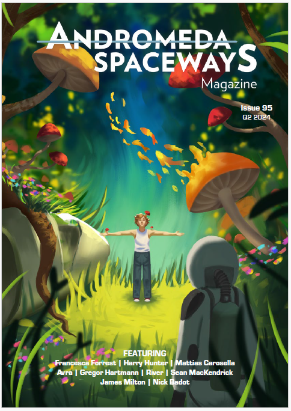
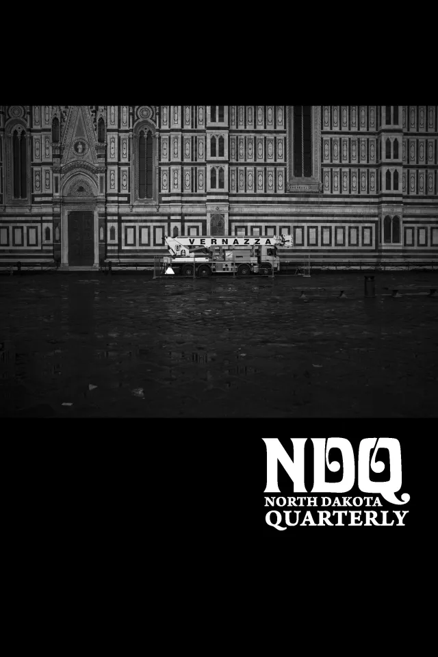

Mattias Carosella
Speculative Fiction & Literary Prose
Selected Publications

“Lycemus Basuris”
Andromeda Spaceways, Issue 95

“The Source”
Beneath Ceaseless Skies, Issue 343

“White Droppings”
Social Gap Experiment Anthology

“Dead Deer”
North Dakota Quarterly, Vol. 86
Bio
Mattias Carosella is a writer based in VA with a background in international history and philosophy.
His secondary world stories meet at the intersections of cultures, both real and imagined.